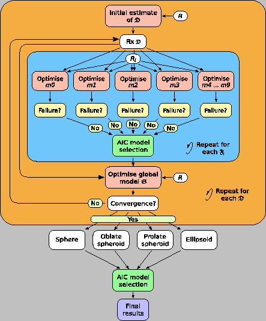
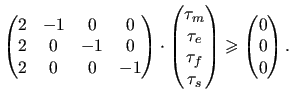

Next: The value, gradient, and Up: Construction of the values, Previous: Construction of the gradient Contents Index
![\includegraphics[width=0.8\textwidth, bb=61 11 585 789]{images/kite.eps.gz}](img182.png) |
The construction of the Hessian for the models

,

,
 , and
is very similar to the procedure used for the gradient. The chi-squared Hessian for the global models
, and
is very similar to the procedure used for the gradient. The chi-squared Hessian for the global models
 and
is
and
is
Figure 8.2 demonstrates the construction of the full Hessian for the model
. The Hessian for the model
 is the sum of all the red blocks. The Hessian for the model
is the combination of the single red block for residue i
, the two orange blocks representing the sub-matrices of chi-squared second partial derivatives with respect to the diffusion parameter
is the sum of all the red blocks. The Hessian for the model
is the combination of the single red block for residue i
, the two orange blocks representing the sub-matrices of chi-squared second partial derivatives with respect to the diffusion parameter
 and the model-free parameter
and the model-free parameter
 , and the single yellow block for that residue. The Hessian for the model-free model
is simply the sub-matrix for the residue i
coloured yellow.
, and the single yellow block for that residue. The Hessian for the model-free model
is simply the sub-matrix for the residue i
coloured yellow.